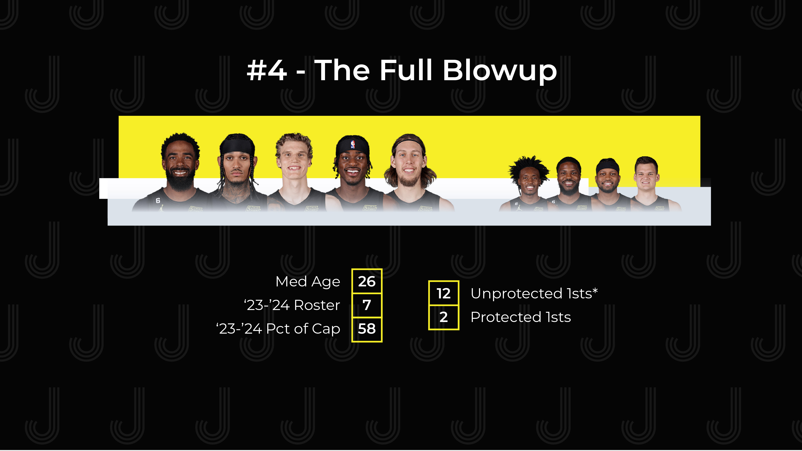

Today we’re joined by Ken Clayton of Salt City Hoops to look retrospectively at the Jazz offseason. We analyse four directions the team could have gone and ponder if the Jazz chose the right one.
Intro
Welcome to Jabber Jazz | Fan-driven, Ad-free content on Utah Jazz basketball
Adam Bushman Twitter | @adam_bushman
Today:
- Did the Jazz choose the right direction this offseason?
Guest:
- Ken Clayton (@k_clayt)
- Contributor to Salt City Hoops
- CBA guru
- Jazz flight tracker
Like what we’re doing? Consider…
- Subscribing
- Following
- Leaving a review or comment
- Snagging some merch
Let’s Jabber Jazz!
Did the Jazz choose the right direction this offseason?
The success to start this season is prompting a lot of questions.
Our question is if the Jazz went the right direction with “the blowup”?
Assumptions:
- Jazz are executing a transition but are all in on winning
- Jazz still hire Will Hardy: Quin was going to leave no matter what
- Jazz still trade O’Neale: flexibility move Jazz needed no matter what
- House, Hernangomez, etc., aren’t shoe-in returning players
- We preserve “full hindsight” in our analysis
Scenario 1: Stay the course
9 Man Rotation:
- Starters: Conley, Mitchell, ?, Bogdanovic, Gobert
- Next 4: Clarkson, ?, Gay, ?
Other Figures:
- Unprotected 1sts: 6 (assuming OKC conveys)
- Protected 1sts: 1
- Median Age: 29
- ’23-’24 Guaranteed Roster Count: 8
- ’23-’24 Guaranteed Salary vs Cap: 91%
Questions:
- How does this team play offensively?
- Spread PnR, some isolation
- How does this team play defensively?
- I think they get out of the shell a bit more
- Probably force some more turnovers
- Gobert on the perimeter more and accountability on the backline
- How fun is this group?
- They’d win a lot but just transplanting Hardy doesn’t solve root cause Gobert/Mitchell
- What’s the immediate ceiling?
- Still “contender” but no one trusts them, potentially even themselves
- What’s the contender window for this squad?
- Probably had two years, until Conley’s contract ends
- How optimistic are you for the future?
- Not very; real improvement would’ve cost those far out picks
Scenario 2: Rudy trade
9 Man Rotation:
- Starters: Conley, Mitchell, Bogdanovic, Vanderbilt, ?
- Next 4: Clarkson, Beasley, Gay, Kessler
Other Figures:
- Unprotected 1sts: 9 (assuming OKC conveys)
- Protected 1sts: 2
- Median Age: 27
- ’23-’24 Guaranteed Roster Count: 7
- ’23-’24 Guaranteed Salary vs Cap: 59%
Questions:
- How does this team play offensively?
- Depends on the C; they go after Kelly, we see a lot of PnR and PnP
- Pretty prolific offensively
- Don’t anticipate a rolling big with Vando
- How does this team play defensively?
- They probably are trying to lean into that caos but they’re average best case scenario
- How fun is this group?
- Pretty prolific offensively
- Definitely would’ve been good and deep, with assets to improve
- What’s the immediate ceiling?
- Competitive in 1st round, likely not exiting the 2nd
- What’s the contender window for this squad?
- Depends on Mitchell-Hardy; no Gobert means Don is happier
- Still is probably only 2 years
- How optimistic are you for the future?
- Jazz have a ton of guard depth and shooting; ideally you snag a John Collins type with the extra assets
- Reasonably optimistic that we’re getting younger and more flexible
Scenario 3: Donovan trade

9 Man Rotation:
- Starters: Conley, Clarkson, Bogdanovic, Markkanen, Gobert
- Next 4: Sexton, ?, Gay, ?
Other Figures:
- Unprotected 1sts: 9 (assuming OKC conveys)
- Protected 1sts: 1
- Median Age: 29
- ’23-’24 Guaranteed Roster Count: 8
- ’23-’24 Guaranteed Salary vs Cap: 87%
Questions:
- How does this team play offensively?
- A ton of spread PnR with good shooters
- I don’t think Lauri is quite as unlocked via cuts with Gobert in the middle
- Still very efficient and potent
- How does this team play defensively?
- Secondary rim protection was always missing since Favors
- Not quick at all on the perimeter
- How fun is this group?
- I think this group is really fun; no Don-Rudy hanging over everything
- Rudy would’ve stayed as long as we wanted
- What’s the immediate ceiling?
- Because this version of Lauri isn’t a #1, volume scorer, you’re looking at competitive first round only
- What’s the contender window for this squad?
- You realistically have 2-3 years, rest of Gobert’s prime and contract
- How optimistic are you for the future?
- Not all that confident; Jazz are still too old
- Jazz would’ve been forced to execute another star trade (Butler?) immediately
- Depth compromised
Scenario 4: Full blowup

9 Man Rotation:
- Starters: Conley, Clarkson, Markkanen, Vanderbilt, Olynyk
- Next 4: Sexton, Beasley, Gay, Kessler
Other Figures:
- Unprotected 1sts: 12 (assuming OKC conveys)
- Protected 1sts: 2
- Median Age: 26
- ’23-’24 Guaranteed Roster Count: 7
- ’23-’24 Guaranteed Salary vs Cap: 58%
Questions:
- What’s the immediate ceiling?
- Competitive in the first round
- What’s the contender window for this squad?
- Because of Lauri(25) and Kessler(21), there’s nearly a decade if the Jazz play it right
- How optimistic are you for the future?
- Pretty optimistic though true contention requires a #1, a top 10-15 player
- We don’t have one
- Pretty optimistic though true contention requires a #1, a top 10-15 player
Conclusion
Which direction did you want at the time? Why?
- I wanted #1 or #2
- It either works with two top 20 players excelling on either side of the ball or not
Which direction would you choose now with perfect hindsight? Why?
- Either #2 or #4
- Hardy has been that impressive with his relationships; could’ve done wonders for Donovan
- Still concern over Don bolting
Close
Thanks for listening!
Like what we’re doing? Here’s how you can support
- Subscribe
- Leave a review
- Score some Jabber Jazz merch